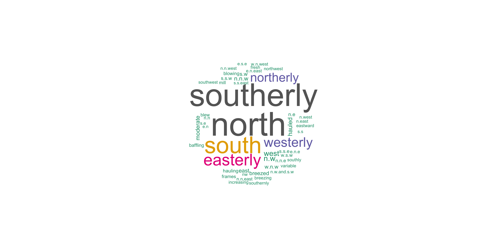

Comparing Historical Texts
USING TIDY DATA PRINCIPLES
Acknowledgements

Slide Structure, Content, and Design adapted from Julia Silge
Let’s install some packages
WHAT IS A DOCUMENT ABOUT? ü§î
What is a document about?
- Term frequency
- Inverse document frequency
\[idf(\text{term}) = \ln{\left(\frac{n_{\text{documents}}}{n_{\text{documents containing term}}}\right)}\]
tf-idf is about comparing documents within a collection.
Understanding tf-idf
Make a collection (corpus) for yourself!
journal_1871_1872$journal <- 1
journal_1873$journal <- 2
journal_1874$journal <- 3
journal_1875$journal <- 4
journal_1876$journal <- 5
journal_1877$journal <- 6
journal_1878$journal <- 7
journal_1879$journal <- 8
journal_1880$journal <- 9
journals <- dplyr::bind_rows(journal_1871_1872, journal_1873, journal_1874,
journal_1875, journal_1876, journal_1877,
journal_1878, journal_1879, journal_1880)Understanding tf-idf
Make a collection (corpus) for yourself!
journals %>%
select(date_mdy, journal_entry, location)
#> # A tibble: 3,951 × 3
#> date_mdy journal_entry location
#> <chr> <chr> <chr>
#> 1 12/23/1871 Was married at home in evening by William Rand Esqr. home
#> 2 12/24/1871 Went to meeting. NA
#> 3 12/25/1871 Shooting match all day in the evening to Christmas tree … hall
#> 4 12/26/1871 About home at work fobbing. home
#> 5 12/27/1871 Work about home reed letter from N. H. Higgins Ins agt. home
#> 6 12/28/1871 Work about home. home
#> 7 12/29/1871 To work in shop. shop
#> 8 12/30/1871 To work in shop. shop
#> 9 12/31/1871 Went to meeting. NA
#> 10 1/1/1872 Work in shop. shop
#> # ℹ 3,941 more rowsCounting word frequencies
library(tidyverse)
library(tidytext)
(journal_words <- journals %>%
unnest_tokens(word, journal_entry) %>%
count(journal, word, sort = TRUE))
#> # A tibble: 9,200 × 3
#> journal word n
#> <dbl> <chr> <int>
#> 1 8 the 868
#> 2 7 the 701
#> 3 4 the 672
#> 4 6 the 644
#> 5 7 <NA> 640
#> 6 9 the 562
#> 7 2 the 539
#> 8 3 the 537
#> 9 5 the 523
#> 10 4 wind 421
#> # ℹ 9,190 more rowsWhat do the columns of journal_words tell us?
Calculating tf-idf
Calculating tf-idf
journal_tf_idf
#> # A tibble: 9,200 × 6
#> journal word n tf idf tf_idf
#> <dbl> <chr> <int> <dbl> <dbl> <dbl>
#> 1 8 the 868 0.0895 0 0
#> 2 7 the 701 0.0741 0 0
#> 3 4 the 672 0.0881 0 0
#> 4 6 the 644 0.0907 0 0
#> 5 7 <NA> 640 0.0677 NA NA
#> 6 9 the 562 0.0634 0 0
#> 7 2 the 539 0.0825 0 0
#> 8 3 the 537 0.0866 0 0
#> 9 5 the 523 0.0861 0 0
#> 10 4 wind 421 0.0552 0 0
#> # ℹ 9,190 more rowsThat’s… super exciting???
Calculating tf-idf
What do you predict will happen if we run the following code? ü§î
Calculating tf-idf
What do you predict will happen if we run the following code? ü§î
journal_tf_idf %>%
arrange(-tf_idf)
#> # A tibble: 9,200 × 6
#> journal word n tf idf tf_idf
#> <dbl> <chr> <int> <dbl> <dbl> <dbl>
#> 1 9 thermometer 357 0.0403 0.811 0.0327
#> 2 7 thermometer 351 0.0371 0.811 0.0301
#> 3 9 degrees 239 0.0270 1.10 0.0296
#> 4 8 thermometer 353 0.0364 0.811 0.0295
#> 5 8 degrees 200 0.0206 1.10 0.0227
#> 6 7 degrees 166 0.0176 1.10 0.0193
#> 7 1 lobsters 26 0.00727 2.20 0.0160
#> 8 1 lbs 36 0.0101 1.50 0.0151
#> 9 1 factory 32 0.00895 1.50 0.0135
#> 10 9 troll 46 0.00519 2.20 0.0114
#> # ℹ 9,190 more rowsCalculating tf-idf
U N S C R A M B L E
group_by(journal) %>%
journal_tf_idf %>%
slice_max(tf_idf, n = 10) %>%
ggplot(aes(tf_idf, fct_reorder(word, tf_idf), fill = journal)) +
facet_wrap(vars(journal), scales = “free”)
geom_col(show.legend = FALSE) +
Calculating tf-idf
journal_tf_idf %>%
group_by(journal) %>%
slice_max(tf_idf, n = 10) %>%
ggplot(aes(tf_idf, fct_reorder(word, tf_idf), fill = journal)) +
geom_col(show.legend = FALSE) +
facet_wrap(vars(journal), scales = "free") +
scale_x_continuous(expand = c(0,0)) +
labs(y = NULL, x = "tf-idf", title = "Highest tf-idf words in Freeland Bunker's Journals")More insight from bigrams!
(tidy_ngram <- journals %>%
unnest_tokens(bigram, journal_entry, token = "ngrams", n = 2) %>%
drop_na(bigram) %>%
select(journal, bigram, date_mdy, location))
#> # A tibble: 61,167 × 4
#> journal bigram date_mdy location
#> <dbl> <chr> <chr> <chr>
#> 1 1 was married 12/23/1871 home
#> 2 1 married at 12/23/1871 home
#> 3 1 at home 12/23/1871 home
#> 4 1 home in 12/23/1871 home
#> 5 1 in evening 12/23/1871 home
#> 6 1 evening by 12/23/1871 home
#> 7 1 by william 12/23/1871 home
#> 8 1 william rand 12/23/1871 home
#> 9 1 rand esqr 12/23/1871 home
#> 10 1 went to 12/24/1871 NA
#> # ℹ 61,157 more rowsN-grams‚Ķ and beyond! üöÄ
tidy_ngram %>%
count(bigram, sort = TRUE)
#> # A tibble: 19,411 × 2
#> bigram n
#> <chr> <int>
#> 1 the wind 2760
#> 2 in the 735
#> 3 wind north 572
#> 4 went to 557
#> 5 wind southerly 543
#> 6 all day 483
#> 7 north west 402
#> 8 wind south 381
#> 9 the afternoon 292
#> 10 south west 275
#> # ℹ 19,401 more rowsFreeland wants to know…

Can we use an anti_join() now to remove stop words?
- Yes! ✅
- No ☹️
N-grams‚Ķ and beyond! üöÄ
So many wind directions‚Ķ! üöÄ
bigram_counts
#> # A tibble: 7,243 × 3
#> word1 word2 n
#> <chr> <chr> <int>
#> 1 wind north 572
#> 2 wind southerly 543
#> 3 north west 402
#> 4 wind south 381
#> 5 south west 275
#> 6 wrote letter 263
#> 7 wind easterly 243
#> 8 west thermometer 186
#> 9 wind westerly 182
#> 10 fresh breeze 175
#> # ℹ 7,233 more rowsHow did Freeland refer to wind?
Let’s remove stopwords, wind, and more
words_to_remove <- c("wind", "thermometer", "north", "west", "south", "east", "degrees", "afternoon", "morning")
bigram_counts <- tidy_ngram %>%
separate(bigram, c("word1", "word2"), sep = " ") %>%
filter(!word1 %in% c(stop_words$word, words_to_remove),
!word2 %in% c(stop_words$word, words_to_remove)) %>%
count(word1, word2, sort = TRUE)What can you do with n-grams?
- tf-idf of n-grams
- weighted log odds of n-grams
- network analysis
- negation
https://pudding.cool/2017/08/screen-direction/
Network analysis
Network analysis
bigram_graph
#> # A tbl_graph: 106 nodes and 104 edges
#> #
#> # A directed multigraph with 20 components
#> #
#> # A tibble: 106 × 1
#> name
#> <chr>
#> 1 north
#> 2 south
#> 3 wrote
#> 4 west
#> 5 fresh
#> 6 southerly
#> # ℹ 100 more rows
#> #
#> # A tibble: 104 × 3
#> from to n
#> <int> <int> <int>
#> 1 1 4 402
#> 2 2 4 275
#> 3 3 14 263
#> # ℹ 101 more rowsFreeland wants to know…
Is bigram_graph a tidy dataset?
- Yes ☑️
- No üö´
Network analysis
What can we learn from trigrams?
(tidy_trigram <- journals %>%
unnest_tokens(trigram, journal_entry, token = "ngrams", n = 3) %>%
drop_na(trigram) %>%
select(journal, trigram, date_mdy, location))
#> # A tibble: 57,904 × 4
#> journal trigram date_mdy location
#> <dbl> <chr> <chr> <chr>
#> 1 1 was married at 12/23/1871 home
#> 2 1 married at home 12/23/1871 home
#> 3 1 at home in 12/23/1871 home
#> 4 1 home in evening 12/23/1871 home
#> 5 1 in evening by 12/23/1871 home
#> 6 1 evening by william 12/23/1871 home
#> 7 1 by william rand 12/23/1871 home
#> 8 1 william rand esqr 12/23/1871 home
#> 9 1 went to meeting 12/24/1871 NA
#> 10 1 shooting match all 12/25/1871 hall
#> # ℹ 57,894 more rowsTrigram counts
words_to_remove <- c("wind", "thermometer", "north", "west", "south", "east", "degrees", "afternoon", "morning")
(trigram_counts <- tidy_trigram %>%
separate(trigram, c("word1", "word2", "word3"), sep = " ") %>%
filter(!word1 %in% c(stop_words$word, words_to_remove),
!word2 %in% c(stop_words$word, words_to_remove),
!word3 %in% c(stop_words$word, words_to_remove)) %>%
count(word1, word2, word3, sort = TRUE))
#> # A tibble: 3,881 × 4
#> word1 word2 word3 n
#> <chr> <chr> <chr> <int>
#> 1 wrote letter home 44
#> 2 steam boat wharf 14
#> 3 top gallant sail 12
#> 4 top gallant sails 12
#> 5 1 2 day 11
#> 6 easterly fresh breeze 11
#> 7 post office department 11
#> 8 capt thomas bunker 10
#> 9 home cutting wood 9
#> 10 main top gallant 9
#> # ℹ 3,871 more rowsThanks!
Slides created with Quarto
Additional Slides
WHAT IS A DOCUMENT ABOUT - other methods? ü§î
What is a document about?
- Term frequency
- Inverse document frequency
Weighted log odds ⚖️
- Log odds ratio expresses probabilities
- Weighting helps deal with power law distribution
Weighted log odds ⚖️
library(tidylo)
journal_words %>%
bind_log_odds(journal, word, n) %>%
arrange(-log_odds_weighted)
#> # A tibble: 9,200 × 4
#> journal word n log_odds_weighted
#> <dbl> <chr> <int> <dbl>
#> 1 7 <NA> 640 47.8
#> 2 9 thermometer 357 27.5
#> 3 9 degrees 239 27.1
#> 4 8 thermometer 353 26.8
#> 5 7 thermometer 351 26.8
#> 6 8 degrees 200 25.1
#> 7 6 <NA> 2 23.9
#> 8 7 degrees 166 23.6
#> 9 6 thermometer 10 17.5
#> 10 9 troll 46 14.4
#> # ℹ 9,190 more rowsWeighted log odds can distinguish between words that are used in all texts.